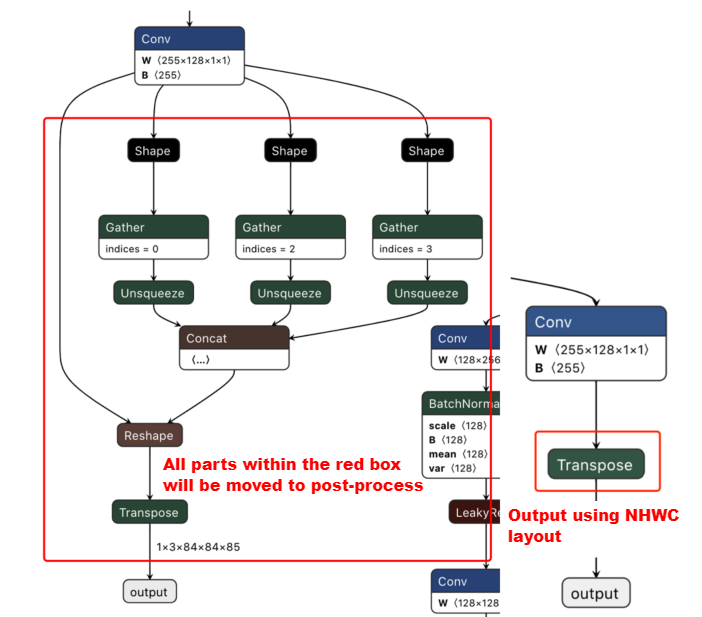

2. Algorithm Model Samples
2.1. Where to Find
Model conversion samples are in the horizon_model_convert_sample folder in release packages.
Corresponding algorithm samples can be found in the 03_classification/, 04_detection/ and 07_segmentation folders from the above mentioned folders.
2.2. Prepare Dataset
The dataset address is vrftp.horizon.ai/Open_Explorer/eval_dataset.
It contains the following datasets:
/Open_Explorer/eval_dataset
├── VOC.tar.gz
├── imagenet.tar.gz
├── coco.tar.gz
├── cityscapes.tar.gz
└── cifar-10.tar.gz
Please ensure that you have Internet access capability and can use wget in the current environment.
Use the following command to download the corresponding dataset as required.
wget ftp://vrftp.horizon.ai/Open_Explorer/eval_dataset/[dataset name]
2.3. Prepare Models
When using the model conversion sample package, please obtain the off-the-shelf FPMs in the model_zoo/mapper/ directory of Horizon’s model release package. Sources and modifications (if any) of the original models, please refer to below subsections.
Note
The computing method of frame rate (Run the latency.sh script with single thread of different models in the /script directory of ai_benchmark_j3 sample package to obtain this performance data, post-processing is not included. \(FPS = 1000/Inference Time Consumption\).
Testing dev board: x3sdbx3-samsung2G-3200.
Testing core number: single core.
2.3.1. MobileNetv1/v2
Model source: https://github.com/shicai/MobileNet-Caffe .
md5sum code:
md5sum
File
3fd6889ec48bda46451d67274144e2a8
mobilenet.caffemodel
8922f90f629d428fecf866e798ac7c08
mobilenet_deploy.prototxt
54aab8425ea068d472e8e4015f22360c
mobilenet_v2.caffemodel
13101ee86ab6d217d5fd6ed46f7a4faa
mobilenet_v2_deploy.prototxt
Frame rate (post-processing not included):
MobileNetv1：311.1388/s.
MobileNetv2：410.1723/s.
Model Accuracy:
MobileNetv1：0.7033(INT8).
MobileNetv2：0.7115(INT8).
2.3.2. GoogleNet
Model source: https://github.com/HorizonRobotics-Platform/ModelZoo/tree/master/GoogleNet.
md5sum code:
md5sum
File
f107ae6806ea1016afbc718210b7a617
googlenet.onnx
Frame rate (post-processing not included): 121.2709/s.
Model Accuracy: 0.6996(INT8).
2.3.3. ResNet18
Model source: https://github.com/HolmesShuan/ResNet-18-Caffemodel-on-ImageNet.
md5sum code:
md5sum
File
0904d601fc930d4f0c62a2a95b3c3b93
resnet18.caffemodel
Frame rate (post-processing not included): 113.6880/s.
Model accuracy: 0.6836(INT8).
2.3.4. EfficientNet_Lite0/1/2/3/4
Attention
To quickly start running samples and avoid the risks caused by third party tools, you are strongly recommended to utilize the off-the-shelf ONNX model in the model_zoo/mapper/ directory in Horizon’s model release package. However, if you find it interersting to reproduce the tflite2onnx model conversion process, you can still try to use below third party tool, but Horizon will not be able to guarantee the quality and successful rate of the conversion.
Model source: obtain the TAR package from https://github.com/tensorflow/tpu/tree/master/models/official/efficientnet/lite.
md5sum of the ONNX models in Horizon’s model_zoo:
md5sum
File
001a329bd367fbec22b415c7a33d7bdb
efficientnet_lite0_fp32.onnx
1205e95aea66650c71292bde236d55a9
efficientnet_lite1_fp32.onnx
474741c15494b79a89fe51d89e0c43c7
efficientnet_lite2_fp32.onnx
550455b41848d333f8359279c89a6bae
efficientnet_lite3_fp32.onnx
bde7fe57eadb4a30ef76f68da622dcd5
efficientnet_lite4_fp32.onnx
Find the .tflite file from the downloaded TAR package, and then convert it into ONNX model using the tflite2onnx tool (https://pypi.org/project/tflite2onnx/). Note that model layout may vary depending on different tflite2onnx tool versions. If the input layout of the converted ONNX model is NCHW, then specify the
input_type_trainoption of EfficientNet_Lite0 asNCHWwhen building the model. EfficientNet_Lite1 should useNCHW, EfficientNet_Lite2 should useNCHW, EfficientNet_Lite3 should useNCHW, EfficientNet_Lite4 should useNCHW.Frame rate (post-processing not included):
EfficientNet_Lite0：437.8284/s.
EfficientNet_Lite1：311.7207/s.
EfficientNet_Lite2：176.4602/s.
EfficientNet_Lite3：116.3467/s.
EfficientNet_Lite4：65.7507/s.
5z. Model accuracy:
EfficientNet_Lite0: 0.7469(INT8).
EfficientNet_Lite1: 0.7625(INT8).
EfficientNet_Lite2: 0.7716(INT8).
EfficientNet_Lite3: 0.7905(INT8).
EfficientNet_Lite4: 0.8058(INT8).
2.3.5. YOLOv2
Attention
To quickly start running samples and avoid the risks caused by third party tools, you are strongly recommended to utilize the off-the-shelf Caffe model in the model_zoo/mapper/ directory in Horizon’s model release package. However, if you find it interersting to reproduce the darknet2caffe model conversion process, you can still try to use below third party tool, but Horizon will not be able to guarantee the quality and successful rate of the conversion.
Download the 608x608 .cfg and .weight files of YOLOv2 from YOLO’s official website (https://pjreddie.com/darknet/yolo/) and convert into Caffe model using the darknet2caffe conversion tool (https://github.com/xingyanan/darknet2caffe). (note that the conversion tool is a simplified version and requires modifying the
'Reshape'layer into'Passthrough'layer in the .prototxt file before the conversion. Details about the parameters of the modified Passthrough layer please refer to the yolov2.prototxt sample. A NCHW2NHWC Permute operation is also added into the output node.)md5sum
md5sum
File
7aa7a6764401cebf58e73e72fcbd2a45
yolov2.caffemodel
72e9a51c1e284e4b66e69f72ca9214c8
yolov2_transposed.prototxt
Frame rate (post-processing not included): 6.4910/s.
Model accuracy:
[IoU=0.50:0.95]: 0.271(INT8).
2.3.6. YOLOv3
YOLOv3 model:
URL: https://github.com/ChenYingpeng/caffe-yolov3/. The caffemodel file can be downloaded from the Baidu cloud url in the README.md file in github.
md5sum code:
md5sum
File
935af6e1530af5c0017b3674adce95e9
yolov3_transposed.prototxt
9a0f09c850656913ec27a6da06d9f9cc
yolov3.caffemodel
Frame rate (post-processing not included): 5.9890/s.
Model accuracy:
[IoU=0.50:0.95]: 0.336(INT8).
2.3.7. YOLOv5
YOLOv5 model:
Download the corresponding pt file from: https://github.com/ultralytics/yolov5/releases/tag/v2.0.
Important
When cloning the source code, please be sure that you’re using the v2.0 Tag, otherwise it will cause conversion failure.
md5sum code:
md5sum
File
2e296b5e31bf1e1b6b8ea4bf36153ea5
yolov5l.pt
16150e35f707a2f07e7528b89c032308
yolov5m.pt
42c681cf466c549ff5ecfe86bcc491a0
yolov5s.pt
069a6baa2a741dec8a2d44a9083b6d6e
yolov5x.pt
To better adapt to post-processing code, before exporting the ONNX model, we should modify the code at Github as follows (more code details please refer to: https://github.com/ultralytics/yolov5/blob/v2.0/models/yolo.py):
def forward(self, x): # x = x.copy() # for profiling z = [] # inference output self.training |= self.export for i in range(self.nl): x[i] = self.m[i](x[i]) # conv bs, _, ny, nx = x[i].shape # x(bs,255,20,20) to x(bs,3,20,20,85) # x[i] = x[i].view(bs, self.na, self.no, ny, nx).permute(0, 1, 3, 4, 2).contiguous() x[i] = x[i].permute(0, 2, 3, 1).contiguous()Note
Remove the reshape from 4D to 5D at the end of each output branch (i.e. not to split the channel from 255 to 3x85), then convert the layout from NHWC to NCHW before dumping.
The bottom left image displays the visualization of a certain output node before modifying the model; while the bottom right image displays the visualization of the corresponding output node after modification.
After download, convert the pt file into ONNX file using the https://github.com/ultralytics/yolov5/blob/v2.0/models/export.py script.
Attention
When using the export.py script:
Because Horizon AI Toolchain can only support ONNX opset 10 and 11, please modify the
opset_versionparameter in thetorch.onnx.exportbased on your expected opset version.Modify the default input name parameter in the
torch.onnx.exportfrom'image'into'data'so as to keep it consistent with that of in the YOLOv5 sample in the model conversion sample package.Modify the default data input size in the
parser.add_argument640x640 into 672x672 so as to keep it consistent with that of in the YOLOv5 sample in the model conversion sample package.
Frame rate (post-processing not included): 14.8898/s.
Model accuracy:
[IoU=0.50:0.95]: 0.342(INT8).
2.3.8. MobileNet_SSD
MobilenetSSD model:
Obtain Caffe model from URL: https://github.com/chuanqi305/MobileNet-SSD.
md5sum code:
md5sum
File
bbcb3b6a0afe1ec89e1288096b5b8c66
mobilenet_iter_73000.caffemodel
Frame rate (post-processing not included): 141.1831/s.
Model accuracy(mAP): 0.7188(INT8).
2.3.9. EfficientNet_Det
Model source: https://github.com/HorizonRobotics-Platform/ModelZoo/tree/master/EfficientDet.
md5sum code:
md5sum
File
ec4129c4b300cd04f1e8f71e0fe54ca5
efficientdet_nhwc.onnx
Frame rate (post-processing not included): 60.5804/s.
Model accuracy:
[IoU=0.50:0.95]: 0.313(INT8).
2.3.10. CenterNet
Model source: https://github.com/HorizonRobotics-Platform/ModelZoo/tree/master/Centernet.
md5sum code:
md5sum
File
fa1e884882a54fa3520d1e51477b4c1a
centernet_resnet50.onnx
Frame rate (post-processing not included): 8.4940/s.
Model accuracy:
[IoU=0.50:0.95]: 0.313(INT8).
2.3.11. UNet
Model source: https://github.com/HorizonRobotics-Platform/ModelZoo/tree/master/MobilenetUnet.
md5sum code:
md5sum
File
21c6c645ebca92befbebc8c39d385c1e
tf_unet_trained.onnx
Frame rate (post-processing not included): 24.1057/s.
Model accuracy:
accuracy: 0.9366(INT8).
mIoU: 0.638184(INT8).
2.3.12. FCOS
Model source can be obtained from Horizon’s open source repo, the repo url is TBD.
md5sum code:
md5sum
File
1321e3f5cbb7c4a521e41820174a82d5
fcos.onnx
Frame rate (post-processing not included): 73.8498/s.
Model accuracy:
[IoU=0.50:0.95]: 0.345(INT8).
2.4. A Demonstration of the Algorithm Model Samples
This chapter takes the YOLOv2 model as an example, uses the scripts in the 04_detection/01_yolov2/mapper/ folder to display some key steps in the conversion from floating-point model into fixed-point model such as: check model, prepare dataset, build heterogeneous model and evaluate model accuracy.
2.4.1. Enter A Docker container
Firstly, please accomplish Docker installation, configuration and enter a Docker container in accordance with the descriptions in: Use Docker section in the Horizon AI Toolchain User Guide.
2.4.2. Check if models are executable
As shown below, run below script:
# 1. enter the folder where the demonstration script is located cd ddk/samples/ai_toolchain/horizon_model_convert_sample/04_detection/01_yolov2/mapper # 2. execute model check sh 01_check.sh
Output of model check:
The abovementioned script uses the
hb_mapper checkertool to check whether the model can be supported by Horizon’s ASIC. Meanwhile, an OP list should be dumped in order to display whether an OP is processed by the BPU or the CPU.=================================================== Node ON Subgraph Type --------------------------------------------------- layer1_conv BPU id(0) HzSQuantizedConv layer1_act BPU id(0) HzLeakyRelu layer2_maxpool BPU id(0) HzQuantizedMaxPool layer3_conv BPU id(0) HzSQuantizedConv layer3_act BPU id(0) HzLeakyRelu layer4_maxpool BPU id(0) HzQuantizedMaxPool layer5_conv BPU id(0) HzSQuantizedConv layer5_act BPU id(0) HzLeakyRelu layer6_conv BPU id(0) HzSQuantizedConv layer6_act BPU id(0) HzLeakyRelu layer7_conv BPU id(0) HzSQuantizedConv layer7_act BPU id(0) HzLeakyRelu layer8_maxpool BPU id(0) HzQuantizedMaxPool layer9_conv BPU id(0) HzSQuantizedConv layer9_act BPU id(0) HzLeakyRelu layer10_conv BPU id(0) HzSQuantizedConv layer10_act BPU id(0) HzLeakyRelu layer11_conv BPU id(0) HzSQuantizedConv layer11_act BPU id(0) HzLeakyRelu layer12_maxpool BPU id(0) HzQuantizedMaxPool layer13_conv BPU id(0) HzSQuantizedConv layer13_act BPU id(0) HzLeakyRelu layer14_conv BPU id(0) HzSQuantizedConv layer14_act BPU id(0) HzLeakyRelu layer15_conv BPU id(0) HzSQuantizedConv layer15_act BPU id(0) HzLeakyRelu layer16_conv BPU id(0) HzSQuantizedConv layer16_act BPU id(0) HzLeakyRelu layer17_conv BPU id(0) HzSQuantizedConv layer17_act BPU id(0) HzLeakyRelu layer18_maxpool BPU id(0) HzQuantizedMaxPool layer19_conv BPU id(0) HzSQuantizedConv layer19_act BPU id(0) HzLeakyRelu layer20_conv BPU id(0) HzSQuantizedConv layer20_act BPU id(0) HzLeakyRelu layer21_conv BPU id(0) HzSQuantizedConv layer21_act BPU id(0) HzLeakyRelu layer22_conv BPU id(0) HzSQuantizedConv layer22_act BPU id(0) HzLeakyRelu layer23_conv BPU id(0) HzSQuantizedConv layer23_act BPU id(0) HzLeakyRelu layer24_conv BPU id(0) HzSQuantizedConv layer24_act BPU id(0) HzLeakyRelu layer25_conv BPU id(0) HzSQuantizedConv layer25_act BPU id(0) HzLeakyRelu layer27_conv BPU id(0) HzSQuantizedConv layer27_act BPU id(0) HzLeakyRelu layer28_reorg BPU id(0) HzSpaceToDepth layer29_concat BPU id(0) Concat layer30_conv BPU id(0) HzSQuantizedConv layer30_act BPU id(0) HzLeakyRelu layer31_conv BPU id(0) HzSQuantizedConv ----------------------End--------------------------Important
Currently the model conversion tool can support at most 32 output. An error will be reported in case the output number of the original model is more than 32.
2.4.3. Prepare Calibration Dataset
Perform the
02_preprocess.shscript in the same directory as shown below:
# convert the images in 01_common/data/coco/calibration_data # into: ./calibration_data_rgb_f32 sh 02_preprocess.shNote
- 50 images from the COCO dataset are extracted as calibration dataset.
pad-resize/ into rgb is performed as pre-processing before calibration.
- The
hb_mappertool will load data from the converted binaries, the format of binary data fileafter pre-processing is: c-order matrix storage, and data type of each matrix value is int8.
2.4.4. Build Heterogeneous Model
Perform the
03_build.shscript in the same directory, as shown below:
sh 03_build.shNote
The abovementioned script uses the
hb_mappertool to convert model. Details of the most concerned configuration file please refer to the 7.1.5 Detailed Introduction of Configuration File section in the X3J3_Toolchain_Docs_{version}_EN/index.html doc.Output of the abovementioned script is shown as below:
>> ls model_output | cat full_yolov2_subgraph_0.html full_yolov2_subgraph_0.json yolov2_608x608_nv12.bin yolov2_608x608_nv12_optimized_float_model.onnx yolov2_608x608_nv12_original_float_model.onnx yolov2_608x608_nv12_quantized_model.onnxNote
For now you ONLY need to focus on the yolov2_608x608_nv12.bin file because other files will be explained in the tool details section.
2.4.5. Accuracy Evaluation
As shown below, perform the
05_evaluate.shscript to evaluate accuracy:
export PARALLEL_PROCESS_NUM=${parallel_process_num} sh 05_evaluate.shNote
As image pre-processing, model data post-processing are required in accuracy evaluation, a Python sample script is offered for your reference. Please refer to
sh 05_evaluate.shfor more details.To accelerate evaluation, please adjust the number of concurrent process while pay attention to the memory utilization.
2.5. FAQ
2.5.1. How to match the inference results of the ONNX original floating-point model and the hb_mapper makertbin tool generated ***_original_float_model.onnx model?
Note
Horizon Robotics’ hb_mapper tools can match user trained ONNX original floating-point model and tool generated
***_original_float_model.onnx model. Therefore, this validation is not part of the required model conversion process.
1. Understand the concepts of the 2 models
Let’s first be crystal clear about the concepts of the 2 models.
The former refers to developer own trained ONNX floating-point models using opensource frameworks e.g. TensorFlow、PyTorch、MXNet, who are also referred to as the original floating-point model here.
While the latter refers to the ***_original_float_model.onnx intermediate model as the output of either the hb_mapper makertbin tool,
or the 03_classification/${modelname}/mapper/03_build.sh script in Horizon Robotics’ model conversion sample package
(i.e. the horizon_model_convert_sample). Wherein, the *** denotes the name of a specific model (e.g. MobileNetv1 or UNet etc.).
2. Understand the distinctions between the 2 models
The computing accuracy of the ***_original_float_model.onnx model and the original floating-point model, as conversion input, should be the same. While a vital distinction is that some data pre-processing compute are added into the ***_original_float_model.onnx. Typically, you don’t really need to use this model unless there is abnormality in conversion results. In such case, giving this model to Horizon Robotics’ technical support personnel can help quickly find out the root cause of conversion abnormality.
3. Write your own script to match the 2 models
Note
The following contents take the mobilenet_onnx model in horizon_model_convert_sample package as an example to describe how to match the inference results of the 2 models.
Developers need to write their own script in order to match the inference results of the 2 models.
please note the follwing points when writing your script.
Attention
The image data processing logic in your script should be the same as that of in the mapper/preprocess.py script in the sample package, in order to avoid inference result difference caused by different image data processing logics. Note that code logic varies as sample package updates. Please refer to the image data preprocessing script or contact Horizon’s technical personnel. The transformer methods to preprocess image data please refer to the following code block:
import sys
sys.path.append("../../../01_common/python/data/")
from transformer import *
from dataloader import *
# image calibration transformer
def calibration_transformers():
"""
step：
1、PIL resize to 256
2、crop size 224*224 from PIL center
3、NHWC to NCHW
"""
transformers = [
PILResizeTransformer(size=256),
PILCenterCropTransformer(size=224),
HWC2CHWTransformer(),
]
return transformers
# image inference transformer
def infer_transformers():
"""
step：
1、PIL resize to 256
2、crop size 224*224 from PIL center
3、bgr to nv12
4、nv12 to yuv444
"""
transformers = [
PILResizeTransformer(size=256),
PILCenterCropTransformer(size=224),
BGR2NV12Transformer(data_format="HWC"),
NV12ToYUV444Transformer((224, 224)),
]
return transformers
Developers can refer to the following example code to match image data pre-processing logic:
def ShortSideResizeTransformer(data, short_size):
image = data
height, width, _ = image.shape
if height < width:
off = width / height
image = cv2.resize(image,
(int(short_size * off), short_size))
else:
off = height / width
image = cv2.resize(image,
(short_size, int(short_size * off)))
data = image
data = data.astype(np.float32)
return data
def CenterCropTransformer(data, crop_size):
image = data
resize_height, resize_width, _ = image.shape
resize_up = resize_height // 2 - crop_size // 2
resize_left = resize_width // 2 - crop_size // 2
data = image[resize_up:resize_up +
crop_size, resize_left:resize_left +
crop_size, :]
data = data.astype(np.float32)
return data
def preprocess(data):
data = ShortSideResizeTransformer(data, short_size=256) # ShortSideResize
data = CenterCropTransformer(data, crop_size=224) # CenterCrop
data = np.transpose(data, (2, 0, 1)) # HWC2CHW
data = data * 255 # (0, 1) --> (0, 255)
Attention
As shown in below graph, a HzPreprocess operator is added into the mobilenetv2_224x224_nv12_original_float_model.onnx model, in order to implement the
data_mean_and_scaleoperation in mobilenetv2_config.yaml.
Therefore, developers need to implement normalization based on the mean_value and scale_value
parameters in mobilenetv2_config.yaml. Refer to below code block:
# Normalize
data = data.astype(np.float32)
mean = np.array([123.675, 116.28, 103.53])
scale = np.array([0.01712, 0.0175, 0.01743])
norm_data = np.zeros(data.shape).astype(np.float32)
for i in range(data.shape[0]):
norm_data[i,:,:] = (data[i,:,:] - mean[i]) * scale[i]
norm_data = norm_data.reshape(1, 3, 224, 224).astype(np.float32)
Attention
By default, the mapper/04_inference.sh script in all model sub-folders implement fixed-point model inference, therefore, when validating the inference result of a floating-point model, the command should be changed into
sh 04_inference.sh originin order to inference floating-point model. Note that code logic varies as sample package updates, please refer to the annotations in the 03_classification/04_mobilenet_onnx/mapper/04_inference.sh script.
After the abovementioned points are implemented, you will be able to match the inference results of the 2 models.